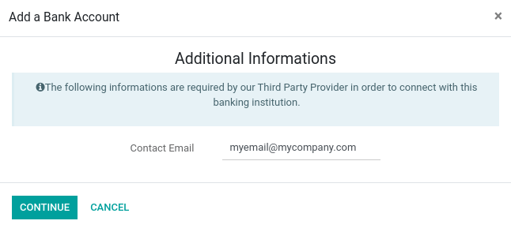
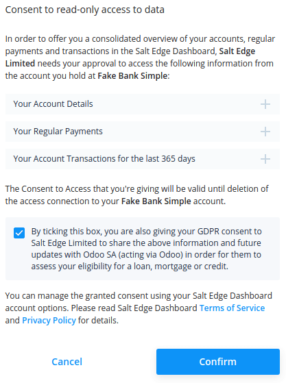

Salt Edge¶
Salt Edge is a third-party provider that aggregates banking information from your bank accounts. It supports ~5000 institutions in more than 50 countries.
Odoo can synchronize directly with your bank to get all bank statements imported automatically into your database.
See also
Configuration¶
Link your bank accounts with Odoo¶
Start synchronization by clicking on .
Select the institution you want to synchronize. You can see if Salt Edge is the third party provider of the institution by selecting it.
After giving your phone number, you are asked for an email address. This email address is used to create your Salt Edge account. Please make sure you enter a valid email address, as otherwise, you will not be able to access your Salt Edge account.
After entering your email address, you are redirected to Salt Edge to continue the synchronization process.

Make sure you give your consent by checking the consent checkbox.
Complete the synchronization by following the steps.
Update your credentials¶
You might have to update your Salt Edge credentials or modify the synchronization settings.
To do so, go to and select the institution you want to update credentials. Click on the Update Credentials button to start the flow and follow the steps.
Don’t forget to check the consent checkbox. Otherwise, Odoo may not be able to access your information.
Fetch new accounts¶
You might want to add new online accounts to your connection.
To do so, go to and select the institution to fetch the new accounts. Click on the Fetch Accounts button to start the flow and follow the steps.
Don’t forget to check the consent checkbox. Otherwise, Odoo may not be able to access your information.
FAQ¶
I have an error when I try to delete my synchronization within Odoo¶
Odoo can’t permanently delete the connection you have created with the banking institution. However, it can revoke the consent you gave so that Odoo won’t be able to access your account anymore. The error you are seeing is probably a message telling you that the consent was revoked, but the record could not be deleted as it still exists within Salt edge. If you want to remove the connection completely, please connect to your Salt Edge account and manually delete your synchronization. Once this is done, you can go back to Odoo to delete the record.
I have an error saying that I have already synchronized this account¶
You have probably already synchronized your bank account with Salt Edge, please check on your dashboard that you don’t already have a connection with the same credentials.
In case you already have a synchronization with the same credentials present on your Salt Edge dashboard and this synchronization has not been created with Odoo, please delete it and create it from your Odoo database.
In case you already have a connection with the same credentials present on your Salt Edge dashboard and this synchronization was created with Odoo, you will normally be able to find it by going to . Please make sure to do an Update Credentials to reactivate the connection.